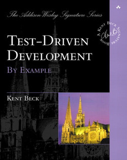
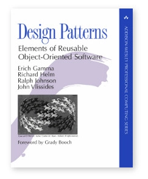
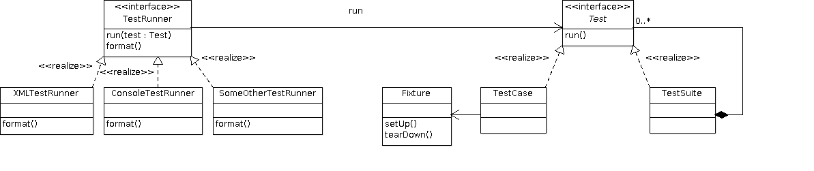

Is Software A Craft? Software Is A Craft!¶

|
 |  |
{kind=link}
{kind=link}
09:00-09:15 Introductory Words¶
This is not a tech seminar, but a psycho-social seminar
Craftsmanship
Do we have rules?
Dont’s?
Should we?
How about that scenario (Robert Martin brings it during one of his talks) …
Someone makes a dumb mistake and software kills 10000 people
Politics will jump in want answers
If we do not have one, they will regulate
Do we want this?
Ethics maybe? Do we have ethics?

Every craft has rules¶
This particular electrical installation does not seem to adhere to any rule.

This is art¶
It does not solve an immediate problem. There are software systems that look like this, though.
Survey: who has had a project in their life that got out of control? Why?
09:15-10:00 Software Engineering: A Discipline? (What Have We Established?)¶
10:00-10:15 Coffee Break¶
10:15-11:00 Establishing “The Project” (Live Hacking, Slides)¶
In a live-hacking session, establish the initial project state.
11:00-12:00 Enter Unit Testing Frameworks¶
{kind=link}
12:00-13:00 Lunch Break¶
13:00-14:00 Cornerstones From The “Clean Code” Book¶
14:00-14:45 Keeping Code Clean In The Small¶
14:45-15:00 Coffee Break¶
15:00-23:59 “Extreme Programming” Session¶
Using Test Driven Development, hack deliciously, fearlessly cleaning up the code base!
See Backlog: What Needs To Change, Or We Will All Die for more.